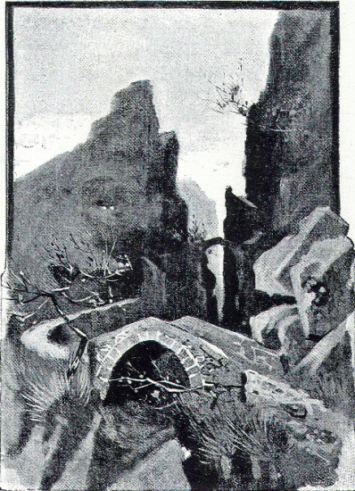

On the following day a great snow-storm made it difficult for the Hellenes to continue their march. Nevertheless they were obliged to go forward, as they had not a sufficient supply of food. The Carduchians now beset them in greater numbers than before, and harassed them with showers of stones and arrows, especially whenever they were hindered by coming to a part of the road that was particularly narrow.
Xenophon, who led the rear-guard, was several times obliged to halt and drive back the enemy, giving as he did so, a signal with the trumpets, in order that Cheirisophus and the van might wait for him. No sooner did the Hellenes turn and prepare to charge, than the Carduchians disappeared as if by magic, but in a very short time they were again in the rear, shooting at them as before.
At first Cheirisophus waited for the hoplites, so that they had no great difficulty in keeping up with the rest of the army, but after a time he took no more notice of the signals, and the distance between the van and the rear became greater and greater, until at last the march of Xenophon and his men was more like a flight than a retreat, whilst all the time they were exposed to the arrows and missiles of the enemy.
When in the evening they rejoined their comrades, Xenophon complained to Cheirisophus of the want of consideration he had shown in obliging the men to run and fight at the same time. In consequence of this, several of them, he said, had fallen, amongst whom were two of the best, and moreover it had been impossible to rescue their bodies.
Among the Hellenes it was regarded as a terrible calamity if anything interfered to prevent the dead from receiving funeral honours. If nothing else could be done, the corpse must at least be solemnly sprinkled with earth in the name of the gods, or the shade of the dead man would find no rest in the Lower World.

AMONG THE CARDUCHIAN MOUNTAINS.
But it was not without urgent necessity that Cheirisophus had hurried forward during the latter part of the march, and he answered, "We were told by the guides that the mountains in front of us are almost impassable, and that there is but one steep road—that which you see yonder—leading to the only pass by which we can cross them. I hoped that by hurrying we might be able to seize this pass before the enemy should occupy it, but unhappily they have reached it first. They are posted there in great numbers, and I do not see how we are to drive them from it."
Xenophon was obliged to admit that Cheirisophus was fully justified in acting as he had done, but be had something to report, which made the situation a little less hopeless. "As the Carduchians persisted in molesting us," he said, "we lay in ambush for them behind some bushes. This gave us the opportunity of doing them an injury, and also of resting ourselves for a moment, for we were quite out of breath. When a band of Carduchians came by, we rushed out upon them and killed most of them, but two I was careful to take alive, and we have brought them as prisoners, for I thought they would be useful in guiding us through these mountains. They may be able to tell us of a second way not known to the guides we have had hitherto."
The two prisoners were led forward to be examined, and the first one was asked if he did not know of another road leading to the pass. Although it was evident that he could, if he chose, give the information of which the Hellenes were in such pressing need, he persisted in saying that there was no other road.
They threatened him with death if be continued obstinate, but it was of no avail, and fearing lest the other Carduchian should be encouraged to follow his example, they determined to show that they were not to be trifled with. It was absolutely essential to find another road, the fate of the whole army depended on it, and in order to strike terror into the heart of the second man, they hanged his comrade before his eyes.
This had the desired effect, and when the second Carduchian was questioned, he said, "There is another road. My country-man would not betray the secret, because his daughter lives near it, with her husband. I am ready to show it to you, and you will find it passable also for the baggage animals."
In war, terrible things occur. For the sake of the general good it is often necessary to be cruel. But still we cannot help regretting the fate of the brave man who for the love of his daughter gave himself over to death.
On further questioning the Carduchian, the generals discovered that the road which he promised to show them was at one point commanded by a peak already in possession of the enemy, who must be dislodged from it before the road could be used. This would probably be an enterprise of some risk, and the generals resorted to an expedient often used in war to rouse enthusiasm for a difficult and dangerous undertaking,—namely that of calling for volunteers.
About two thousand men at once offered their services, of whom some were officers and others private soldiers. Having first eaten a good meal, they set out, as soon as it began to get dark, in a storm of wind and rain, guided by the Carduchian, whom they had put into chains, lest he should desert them on the way.
It was arranged that the band of volunteers should dislodge the Carduchians from the height commanding the second road, and remain there during the night. At dawn they were to descend towards the pass and begin the attack upon it, giving at the same time a signal with the trumpets. On hearing the signal, a part of the army left below was to ascend as rapidly as possible by the first road, and join them at the pass.
In order to divert the attention of the enemy from the movements of the two thousand, Xenophon set out at the same moment with the hoplites, and made a feint of advancing up the first road leading to the pass.
Coming however to a narrow ravine between great boulders of rock, he found the cliffs on either side crowded with Carduchians, who had dragged to that place huge fragments of rock, besides stones of all sizes, ready to be hurled down upon the Hellenes. The moment the Carduchians caught sight of the approaching enemy, down crashed the stone-storm, making the most appalling noise as the great pieces of rock bounded from boulder to boulder, broke off into a thousand splinters, and then thundered to the ground, burying themselves finally deep in the earth.
Had the Hellenes entered the ravine, not one of them would have escaped alive. But they had taken good care to keep well beyond the range of the deadly hail, only, from time to time, one or other of the captains would show himself from among the bushes on either side of the ravine, as if he were looking for some other way of getting past.
When it had become so dark that they could no longer be seen by the Carduchians, the Hellenes hastened back to the valley, where they were glad enough to prepare their evening meal, for they had bad no dinner that day. All through the night they could hear the noise made by the Carduchians, who were still on the alert, and who continued to pour down volleys of stones and rock, lest their enemies should slip past them in the darkness.
Meanwhile the two thousand volunteers had been led by their guide to a place which they believed to be the peak commanding the second road. There they found a number of Carduchians sitting comfortably round their fires, and attacking them suddenly, they killed some and put the rest to flight. Then they sat down and spent the remainder of the night in front of the fires that had been kindled by the enemy, which, as it was excessively cold, they looked upon as a piece of great good fortune.
At dawn they proceeded towards the pass, very cautiously and silently, according to the instructions they had received, and under cover of a thick mist, were able to come close up to the enemy unobserved. Then the trumpets gave the signal that had been agreed upon, and the Hellenes, charged. The enemy saw that it was of no use to attempt to maintain their position, and fled without a struggle, only a few of them being killed.
This freed the road, up which Cheirisophus and his men were making their way as fast as possible. It was excessively steep and narrow, and in their eagerness to reach the top, many of the men climbed as best they could over places where there was no path, drawing one another up with the help of their spears, At last they reached the pass, and joined the band of volunteers who were already in possession.
Two-thirds of the army had now reached the pass, But for the rest there was still in store a long day of toil and fighting before they could arrive at the same spot.